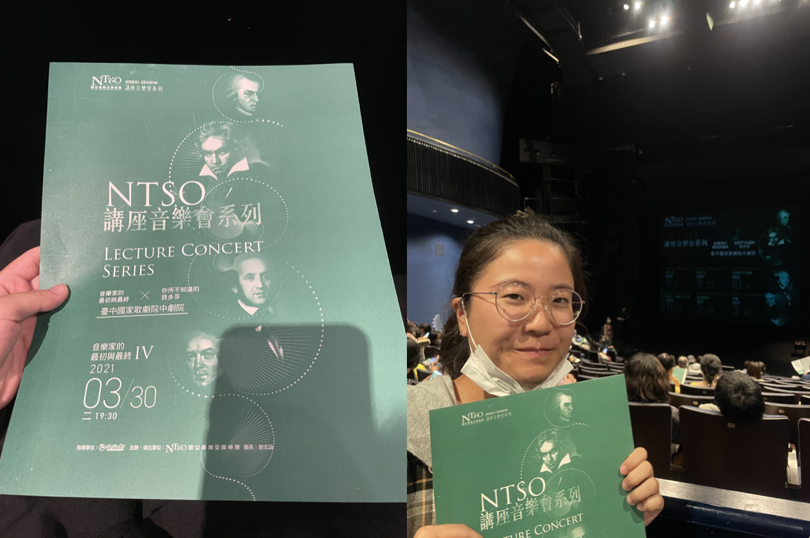
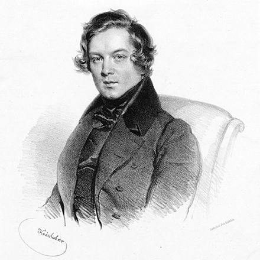

古典音樂會欣賞
4109043009 食生系 唐紫翎
音樂會介紹 作曲家生平 樂曲背景介紹 心得感想
音樂會介紹
名稱：NTSO講座音樂會系列 音樂家的最初與最終IV—舒曼
時間：2021/03/30 (二) 下午7點30分
地點：台中國家歌劇院中劇院
策劃＆主講人：楊照
鋼琴：江恬儀

作曲家生平

舒曼（原文名：Robert Alexander Schumann）
樂曲背景介紹
阿貝格變奏曲，作品1（Abegg Variations,Op.1）
幽靈變奏曲 (Variations On a Them in E-flat Major for Piano,WoO 24 – Ghost Variations)
心得感想
我的講座音樂會初體驗，讓我留下深刻的印象。有別以往聽音樂會的經驗，參加講座音樂會就好像聽故事一般，透過主講者精闢的解說，不僅讓人認識作曲家的一生，還能了解其作曲背後的含義，更能使我們猶如坐上時光機，回到19世紀，一邊欣賞演奏者深情詮釋著舒曼的最初與最終作品，一邊陪著舒曼走完他精彩卻短暫的一生。
VIDEO